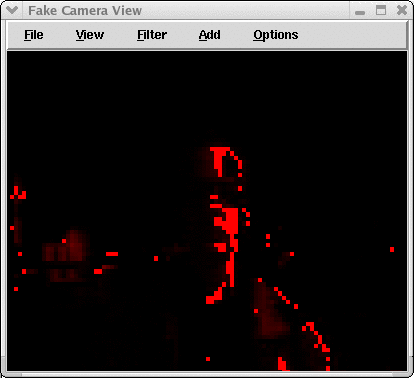
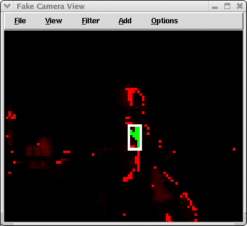

|
|||||||
| [ Home ] | [ Software ] | [ Curriculum ] | [ Hardware ] | [ Community ] | [ News ] | [ Publications ] | [ Search ] |
|
Pyro Module Vision SystemPyro comes with a number of predefined camera types. Each camera object is actually made up of two components: a camera device, and a vision system. The camera device is often an interface to a piece of hardware that digitizes images from a camera. As mentioned, this device is sometimes called a framegrabber. However, the camera device could also be a simulated camera. The vision system is connected to the camera device to provide image processing functions. Usually these vision processes can be seen as filters over the lens of the camera; however, they can also be arbitrarily complex programs. Because image processing is an expensive operation, we have implemented most of these functions in C++. However, you can also write image processing functions in Python. This is slow, but can make a good way to learn, or make a prototype. Pyro attempts to simplify the interface to the camera device and vision system, while at the same time making it easy for one to write their own vision systems. Thus, the programming interface is slightly different in this subsystem. By doing so, we can call the lower level C++ code directly from Python. First, start up Pyro with a robot. Because a camera is a Pyro device, it requires some kind of robot. For this tutorial, we aren't interested in the robot, but in the vision system. Therefore, we can use a stub of a robot that actually doesn't do anything. This is the Test robot. You can select the robot from the load robot button (i.e., "Robot:"). Next, select the FakeCamera from the Device... menu item under the Load of the main menu. You can also start both the Test robot and FakeCamera from the command line:
pyrobot -r Test -d FakeCamera The rest of this tutorial will be performed by interacting with the Fake Camera View window.
First, you might want to drag the window larger. You can also adjust the speed that the window updates. Under View select Fast Updates (10Hz). This will instruct the camera to update 10 times a second. You will probably only want to do this when you are designing a set of filters. This can be a drag on system resources. Note that the window update interval is independent of the camera update interval. The device update interval is the same as the robot update interval and is set at 10 updates a second. You can add filters to the image by selecting from the Add menu of the camera window. You can also create a filter by selecting pixels by clicking in the image (with the left, center, and right mouse buttons). Each mouse click will add a filter that looks for the type of pixel that you clicked on (plus or minus a tolerance). The left mouse button will map matching pixels to the red channel, the middle mouse button will map matching pixels to the green channel, and the right mouse button will map matching pixels to the blue channel. The filters under the Add menu item are added to the filter list. You can also do this in the command window using the .addFilter() method of the camera. We'll explore that option below. First, let's create a filter that looks for pixels of the type found on the person's face in the FakeCamera view. First, you may want to "pause" the camera so that it is easier to click on particular pixels. This is done by selecting Pause from the View menu of the camera window. Now, click on a pixel in the face. You should see a view similar to the following:
If you make a mistake and click on a pixel that is also in much of the surrounding scene, or just click on the wrong pixel, simply select Filter -> Clear filters -> Last. Next, you might want to select only those pixels that are very red (i.e., the ones that we have clicked on). You can do that by adding a superColor filter. Select Supercolor -> Red from the Filter main camera menu. That will turn off the other color planes, too.  Finally, let's blobify the image. Select Blobify -> Red from the Filter menu.  You can list out the current filters by selecting List filters from the Filter main menu. You can also add a function to the filter list by entering the appropriate command at the command line. We'll explore that in the next section.
Vision FunctionsYou have access to a few low-level functions for getting and setting particular pixel values: Camera.getVal(x, y) returns (r, g, b) Camera.setVal(x, y, (r, g, b)) sets a pixel's value. However, this would make image processing very slow. There are many more high-level functions.
Vision in brainsIf you list the filters from the filter menu, you will see the active filters. You can cut and past that code into your brain directly. For example, consider that you left click on a pixel that is has red, green, and blue components of (160, 32, 240), and middle click on a pixel that has red, green, and blue components of (20, 55, 200) then you will see the following filters listed:
self.robot.camera[0].addFilter("match",160,32,240,)
self.robot.camera[0].addFilter("match",20,55,200,30,1,)
The first addFilter() matches the r,g,b (160,32,240) color, with the default of plus or minus 30 units, and and output channel of 0 (the red channel). The function match might be implemented like this:
def match(r, g, b, v=30, output=0):
outputColor = [0, 0, 0]
outputColor[output] = 255
for x in self.robot.camera[0].width:
for y in self.robot.camera[0].height:
rgb = self.robot.camera[0].getVal(x, y)
if ((r - v <= rgb[0] <= r + v) and
(g - v <= rgb[1] <= g + v) and
(b - v <= rgb[2] <= b + v)):
self.robot.camera[0].setVal(x, y, outputColor)
where v is for variance (or tolerance), and output is either 0, 1, or 2 for red, green, or blue. Following that application of match, it would then be called again with (20, 55, 200). Again, with a default of tolerance of 30, but this time an output channel of 1 (blue). Let's now look at a sample brain that uses a camera.
from pyrobot.brain import Brain
class VisionBrain(Brain):
def setup(self):
# get a camera that is already running and
# add a function to the filter list:
self.robot.camera[0].addFilter('match', 158 , 71 , 48 , )
self.robot.camera[0].addFilter('match', 225 , 129 , 89 , )
self.robot.camera[0].addFilter('match', 188 , 109 , 68 , )
self.robot.camera[0].addFilter("superColor", 1, -1, -1, 0) # rgb weights, 0 = red channel
self.robot.camera[0].addFilter("threshold", 0, 50) # red channel, 50 > 0
self.robot.camera[0].addFilter("blobify", 0) # red channel
# filters return values in robot.camera[0].filterResults
def step(self):
# do something with the camera processed data:
print self.robot.camera[0].filterResults
def INIT(engine):
return VisionBrain('SimpleBrain', engine)
[
In this example, we basically copy the code into the brain, right in the setup() method. This uses the addFilter() command to affix the filter to the camera. These filter matches will then get called automatically right after each time a new image is taken with the camera. However, sometimes we might want to have more control over the filtering. For example, we might want to only apply a filter if a certain condition is true. Consider the following example:
from pyrobot.brain import Brain
def process(camera):
camera.apply('match', 158, 71, 48, )
match = camera.apply('match', 225 , 129 , 89 , )
if match > 50:
camera.apply('match', 188, 109, 68, )
else:
camera.apply('match', 40, 200, 56, )
camera.apply("superColor", 1, -1, -1, 0) # rgb weights, 0 = red channel
camera.apply("threshold", 0, 50) # red channel, 50 > 0
return camera.apply("blobify", 0) # red channel
# filters return values are stored in robot.camera[0].filterResults
# the process() filter only has one return value, that returned from the blobify
class VisionBrain(Brain):
def setup(self):
# get a camera that is already running and
# add a function to the filter list:
self.robot.camera[0].addFilter( process ) # process is the name of a method that takes a camera
def step(self):
# do something with the camera processed data:
print self.robot.camera[0].filterResults
def INIT(engine):
return VisionBrain('SimpleBrain', engine)
[
In most ways, this brain is very similar to all those already seen. In the setup() we have started the FakeCamera service, which is a simulated camera madeup from images from a directory. It also has the default Pyro vision system. We attach a filter to the camera by way of the camera.addFilter() method. Notice that here we are adding a function that we have defined. process() is a function that takes one argument, the camera. The import vision processing steps are in the process() function. Here you can put any of the following commands:
camera.apply("match" red, green, blue, tolerance, outChannel)
camera.apply("matchRange", red1, green1, blue1, red2, green2, blue2, outChannel)
camera.apply("superColor", redWeight, greenWeight, blueWeight, outChannel)
camera.apply("threshold", channel, thresholdValue)
camera.apply("blobify", inChannel, lowValue, highValue, sortmethod (0 = square area, 1 = mass), blobCountToReturn, drawBox)
camera.apply("meanBlur", kernelEdgeSize)
camera.apply("gaussianBlur")
camera.apply("medianBlur", kernel)
camera.apply("sobel", kernel)
camera.apply("motion")
camera.apply("backup")
camera.apply("restore")
camera.apply("inverse")
camera.apply("grayScale")
camera.apply("drawRect", x1, y1, x2, y2, fill, channel)
These commands are arguments to the camera.apply() method. The camera then applies the named function to the camera image.
Handling more than three outputsAll of these functions either set the red, green, or blue as output, or use that output. But what do you do if you need more than three outputs? For example, what if you want to track 5 different colored objects? No problem, you can use the backup and restore functions. First, before you add any filter, call the "backup" filter. That will make a copy of the image as it currently looks. Then apply your matching filters, blobifies, etc. When done with the filters for that object, call the "restore" filter. That will copy the original image back, and you can repeat the process as many times as you like. Remember that you will either need to save intermediate values; only the return value of process() (or any applyFilter() call) is saved in the Camera.filterResults list.
Starting up a cameraTo start the any camera service:
self.camera = self.startDevice(CAMERATYPE)
Valid camera types are: "V4LCamera", "AiboCamera", "PlayerCamera", "camera", "FakeCamera", "TutorialCamera", "RobocupCamera", and many more.
The camera device grabs images in a different thread than what the brain is running in, so it updates itself regardless of where the program is executing. Pyro takes care of making sure that these two processes don't conflict. Recall from Introduction to Computer Vision that the processing for the filter and blob functions requires you to specify a channel (0 for red, 1 for green, and 2 for blue) to which the results will be written. All of the filtering functions default to the red channel. You can change that to another channel via programming. See descriptions of the individual filters in the next section. Next: PyroVisionSystemFunctions Up: PyroModuleComputerVision
|
| [ Home ] | [ Software ] | [ Curriculum ] | [ Hardware ] | [ Community ] | [ News ] | [ Publications ] | [ Search ] |
 View Wiki Source | Edit Wiki Source | Mail Webmaster
View Wiki Source | Edit Wiki Source | Mail Webmaster | |||||||